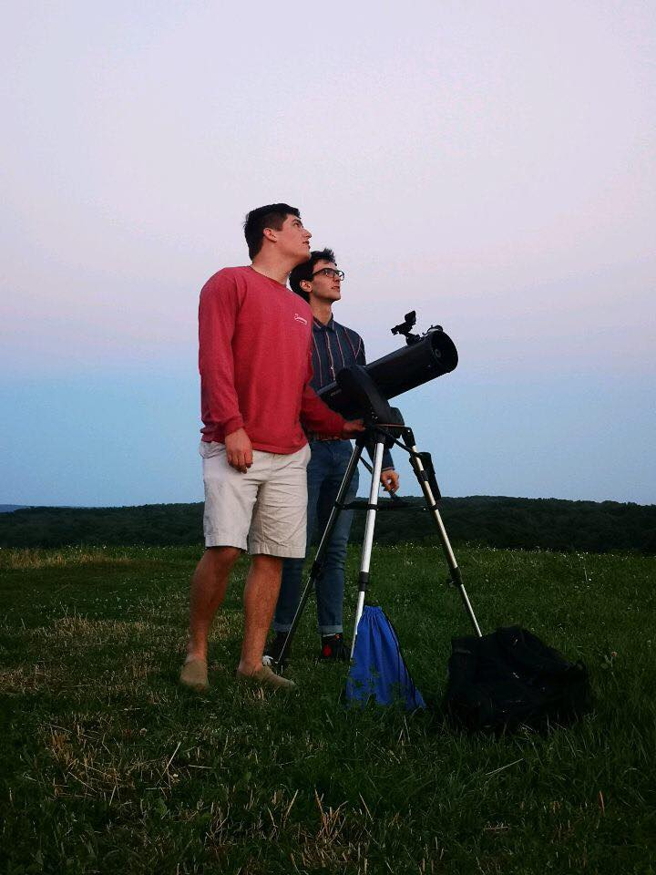
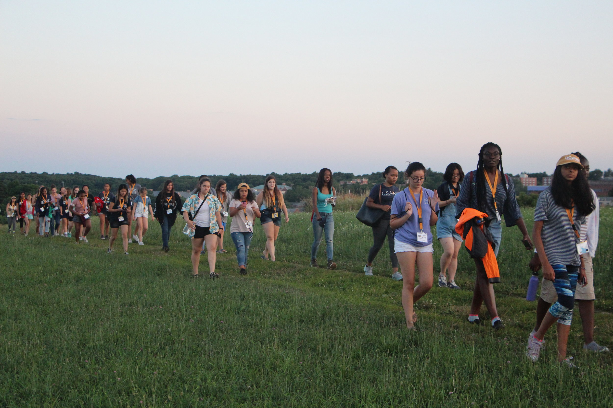
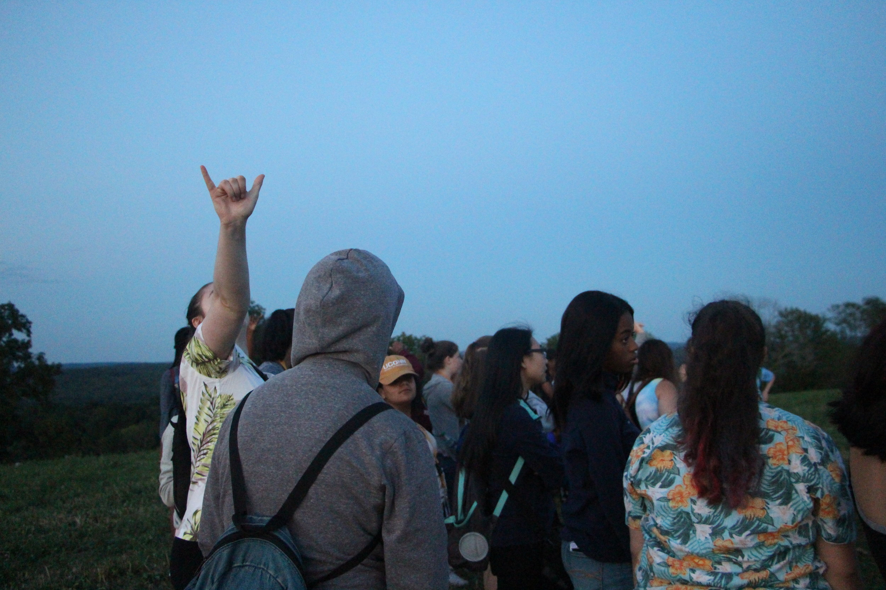
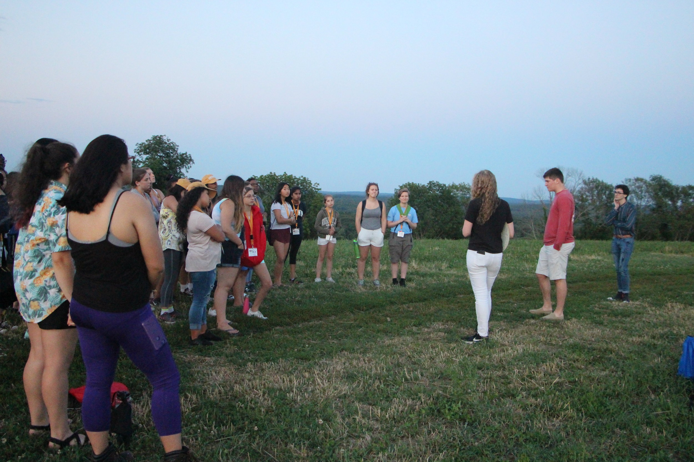
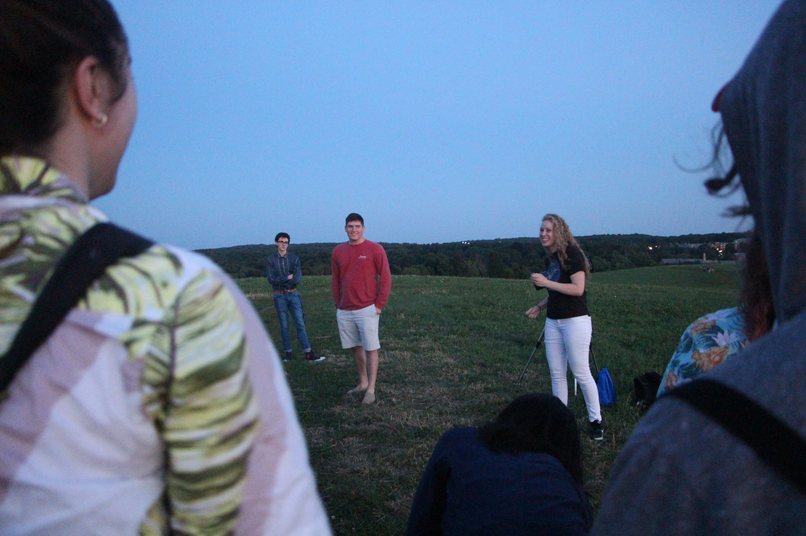
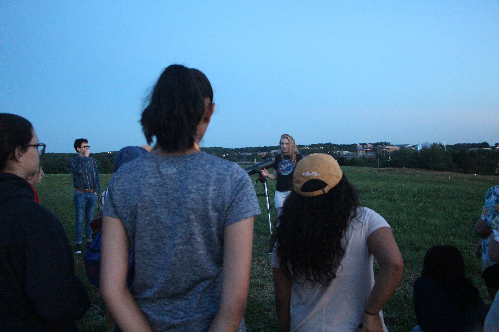
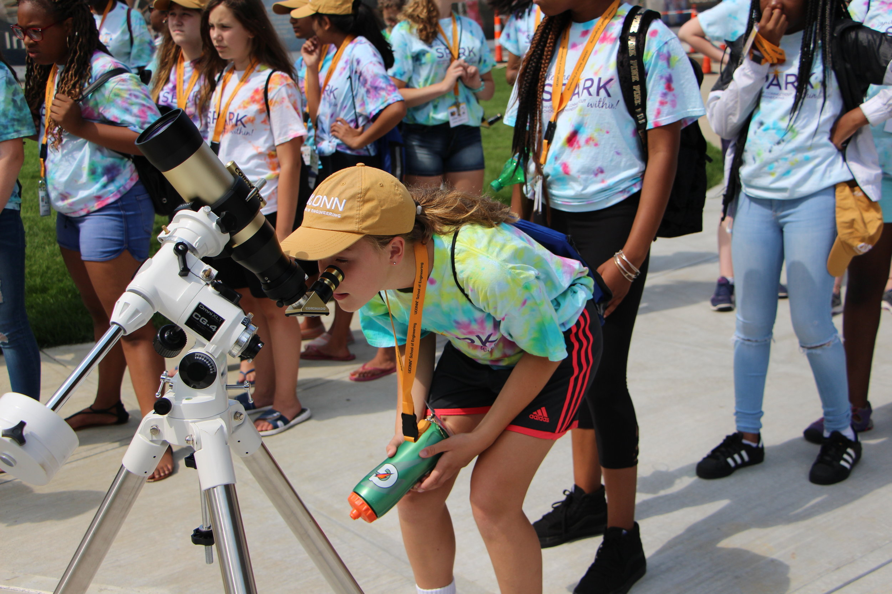
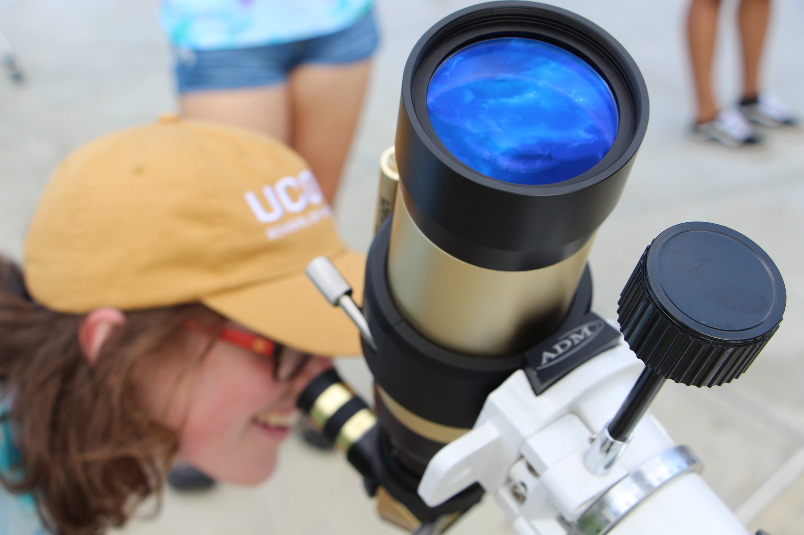
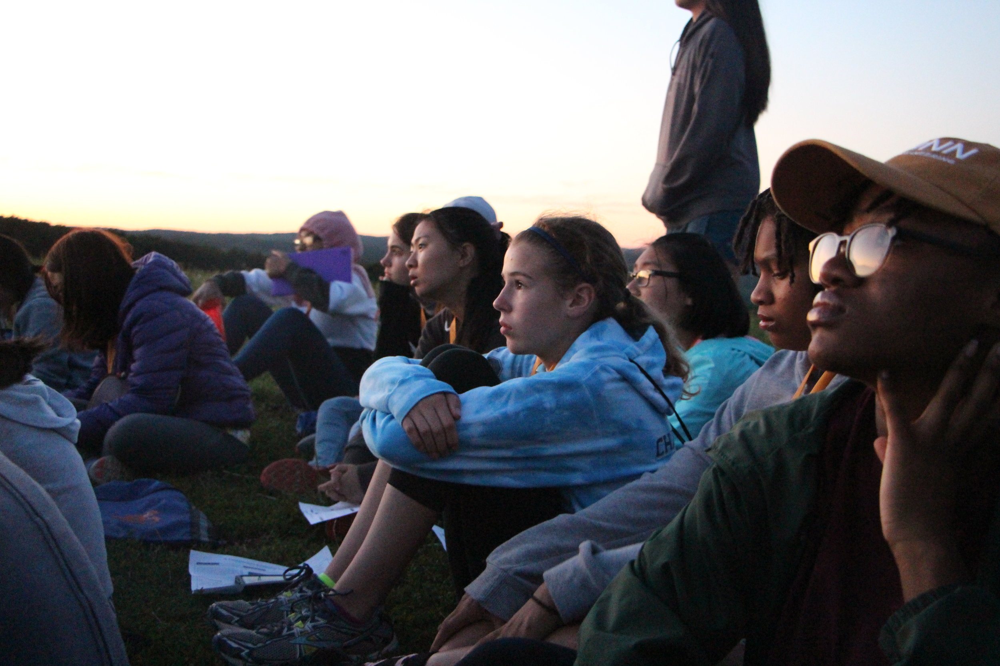
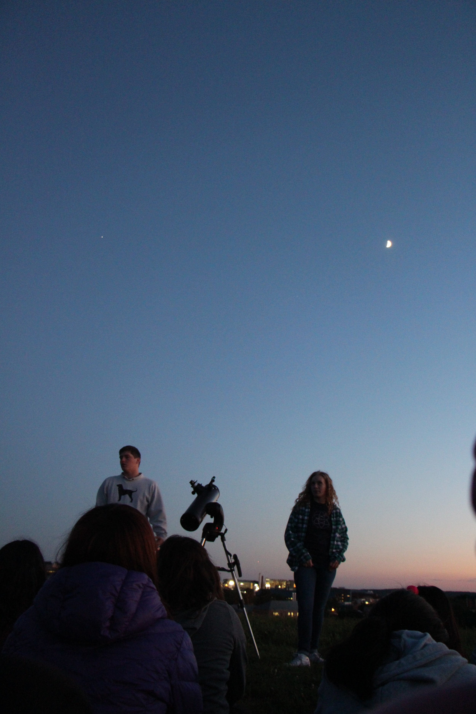

Night sky tour ignites the SPARK within

UConn undergraduate physics majors Amelia Henkel, Sam Cutler and Tyler Metivier led a night sky tour for a group of about 30 middle school and high school aged girls at Horsebarn Hill on Thursday, July 12th. The event was put on for SPARK, a summer residential program where young females are using math and science skills in hands-on projects and experiments. The SPARK program runs for four weeks over the month of July and is sponsored by the School of Engineering Diversity and Outreach Center at UConn. Amelia, Sam and Tyler will be leading night sky tours for the next three cohorts of the SPARK summer program in the coming weeks.








